측량및지형공간정보기사 (2018-04-28 기출문제)
1과목: 측지학 및 위성측위시스템
1. 사이클 슬립(cycle slip)이 발생하는 경우와 거리가 먼 것은?
- 높은 지대로 주변에 장애물이 없는 곳에서 측량을 하는 경우
- 태양폭풍에 의해 전리층이 교란된 경우
- 수신기를 갑자기 이동한 경우
- 신호가 단절된 경우
(정답률: 78%)

2. 해수면의 높이 변화를 측정하기 위하여 위성 고도계에서 관측하는 관측값은?
- 위성에서 송신한 신호가 해수면에 반사되어 돌아오는 시간
- 위성과 해상의 목표물과의 거리
- 위성과 해상의 목표물과의 각도
- 위성에서 촬영하는 영상
(정답률: 76%)
3. GPS의 특징에 대한 설명으로 옳지 않은 것은?
- 측정위치가 세계적으로 통일된 좌표로 표시된다.
- 넓은 지역의 측량을 효과적으로 할 수 있다.
- 직접 측정되어 얻는 결과는 정표고이다.
- 몇 개의 기지점과 미지점의 동시관측으로 상대위치의 정확도를 향상시킬 수 있다.
(정답률: 73%)
4. 지오이드에 대한 설명으로 옳은 것은?
- 평균해면으로 전 지구를 덮었다고 생각할 때의 가상곡면이다.
- 지구의 반지름을 6370 km로 본 구면을 말한다.
- 지구를 회전 타원체로 본 표면이다.
- 지구 그대로의 표면이다.
(정답률: 72%)
5. 지구의 자기장 변화와 거리가 먼 것은?
- 영년변화
- 세차변화
- 일변화
- 자기폭풍
(정답률: 53%)
6. GPS 절대측위에서 HDOP와 VDOP가 2.3 과 3.7 이고 예상되는 관측데이터의 정확도(σ)가 ±2.5m일 때 예상할 수 있는 수평위치 정확도(σH)와 수직위치 정확도(σV)는?
- σH=±0.92m, σV =±1.48m
- σH=±1.48m, σV=±8.51m
- σH=±4.8m, σV=±6.20m
- σH=±5.75m, σV=±9.25m
(정답률: 50%)
7. GNSS 측량시 시계오차가 소거된 3차원 위치 결정을 위해 필요로 하는 최소 위성의 수는?
- 4대
- 5대
- 6대
- 7대
(정답률: 74%)
8. 통합기준점 측량을 위한 GNSS 관측 데이터의 기선해석에 대한 설명으로 옳지 않은 것은?
- GNSS위성의 궤도요소는 정밀력을 사용한다.
- 기선해석 결과는 Float해를 사용한다.
- 기선해석을 2주파로 실시하고 최저고도각은 15°로 한다.
- 사이클슬립의 편집은 기선해석 소프트웨어를 이용한 자동편집으로 한다.
(정답률: 63%)
9. 지자기의 3요소에 해당되지 않는 것은?
- 복각
- 편각
- 수평분력
- 연직분력
(정답률: 72%)
10. 위도 80°이상의 양극지역의 좌표를 표시하는데 쓰이며 극심 입체 투영법에 의한 좌표는?
- UTM 좌표
- UPS 좌표
- TM 좌표
- 3차원 직교좌표
(정답률: 70%)
11. 구면삼각형 ABC의 세 내각이 ∠A=50°20´, ∠B=66°55´, ∠C64°25´ 일 때 면적은? (단, 지구반지름은 6370km이다.)
- 1,180,333km2
- 1,362,788km2
- 1,433,456km2
- 1,534,433km2
(정답률: 52%)
12. UTM좌표계에 우리나라가 속해 있는 UTM도엽 중 52S 구역의 원점은?
- 중앙자오선 동경 125°와 적도
- 중앙자오선 동경 127°와 적도
- 중앙자오선 동경 129°와 적도
- 중앙자오선 동경 135°와 적도
(정답률: 60%)
13. 측량의 분류 중 측량 구역이 상대적으로 협소하고 필요로 하는 정밀도에 따라 지구의 곡률을 고려하지 않아도 되는 측량을 무슨 측량이라고 하는가?
- 삼각측량
- 평면측량
- 측지측량
- 천문측량
(정답률: 69%)
14. 중력이상에 대한 설명으로 옳지 않은 것은?
- 후리에어보정(free-air correction): 단순히 높이차만을 계산에 의해 보정
- 후리에어이상(free-air anomaly): 지형보정, 고도보정을 한 후 관측점의 위도에 따라 정해지는 표준중력값을 뺀 값
- 부게보정(Bouguer correction): 높이 h인 면과 지오이드면 사이의 물질에 의한 인력을 뺀 값
- 부게이상(Bouguer anomaly): 지형 및 후리에어보정을 한 후 표준중력값을 더한 값
(정답률: 48%)
15. GNSS의 상대측위에 대한 설명으로 옳지 않은 것은?
- 상대측위는 공간적 상관성이 높은 오차를 최소화하여 정확도 향상이 가능하다.
- 대표적인 실시간 상대측위 기법은 DGPS와 RTK가 있다.
- 센티미터 수준의 정확도 확보를 위해서는 반송파를 사용한다.
- 반송파를 이용하는 상대측위에서는 단일차분을 사용한다.
(정답률: 61%)
16. 지구상의 어느 한 점에서 타원체의 법선과 지오이드의 법선은 일치하지 않게 되는데 이 두 법선의 차이를 무엇이라 하는가?
- 중력 편차
- 지오이드 편차
- 중력 이상
- 연직선 편차
(정답률: 54%)
17. GPS에서 전송되는 L 대의 신호 주파수가 1227.60MHz일 때 L2 신호 300000 파장의 거리는? (단, 광속(c) = 299792458 m/s 이다.)
- 36803 m
- 36828 m
- 73263 m
- 1228450 m
(정답률: 54%)
18. GPS에 대한 설명으로 옳지 않은 것은?
- GPS는 원래 미국과 동맹국의 군사적 목적으로 개발되었으나, 현재는 일반인에게 위치정보제공을 위한 중요한 사회기반으로 활용되고 있다.
- GPS는 고도 약 20200km에서 타원 궤도를 그리며 운행하는 인공위성으로 구성되어 있다.
- GPS 위성의 고도는 중력이상이 궤도에 미치는 영향이 커 정밀한 궤도 계산이 어렵다.
- GPS 위성은 지상제어국에 의해 제어된다.
(정답률: 73%)
19. 물리학적 측지학에 해당 되는 것은?
- 3차원 위치 결정
- 중력 측정
- 사진 측정
- 위성 측지
(정답률: 57%)
20. 균시차를 구하는 식으로 옳은 것은?
- 균시차 = 세계시 - 태양시
- 균시차 = 평균태양시 - 표준시
- 균시차 = 시태양시 - 평균태양시
- 균시차 = 항성시 - 세계시
(정답률: 66%)
2과목: 응용측량
21. 노선의 중심말뚝(간격20m)에 대해서 횡단측량 결과 단면1의 면적이 208m2, 단면2의 면적은 1326m2 일 때 두 단면간의 토량은?
- 2758080m3
- 30680m3
- 15340m3
- 11180m3
(정답률: 49%)
22. 곡선반지름 R=400m, 곡선길이 L=100m인 클로소이드 곡선의 매개변수(A)는?
- 100 m
- 200 m
- 400 m
- 800 m
(정답률: 70%)
23. 지상에서 4km2 면적이 도면상에서 1600cm2 이었다면 도면의 축척은?
- 1:2000
- 1:5000
- 1:25000
- 1:50000
(정답률: 48%)
24. 넓은 지역의 정지나 매립과 같은 경우의 토공량 산정 시 많이 이용하는 방법으로, 대상지역을 일정한 크기의 삼각형 또는 사각형으로 구분하여 각 꼭지점 지반고에서 계획고 사이의 높이차를 구하여 체적을 구하는 방법은?
- 양단면 평균법
- 중앙단면법
- 등고선법
- 점고법
(정답률: 72%)
25. 항공사진판독에 의한 해안선결정에서 고려해야 할 내용으로 옳지 않은 것은?
- 촬영시각을 저조시로 선택하면 저조선과 함께 암초, 간출암 등을 발견하는데 도움이 된다.
- 해안경사가 완만한 모래안에서는 해안에 떠밀려온 부유물 흔적으로 한다.
- 촬영시각이 최저저조시와 일치할 경우, 사진상 해면과 육지의 경계를 해안선으로 한다.
- 천연색 또는 적외선사진을 사용하면 판독이 용이하다.
(정답률: 44%)
26. 터널 내의 두 점의 좌표가 A(-70.20, -81.00),B(110.50, 135.20)이고 높이가 각각 32.40m, 121.20m인 A, B점을 연결하는 터널을 굴진하는 경우 이 터널의 사거리는? (단, 좌표의 단위는 m 이다.)
- 295.43m
- 298.98m
- 320.97m
- 376.29m
(정답률: 47%)
27. 교각 60°, 곡선반지름 100m인 원곡선에서 이 원곡선의 시점을 움직이지 않고 교각을 100°로 증가시켜 새로운 원곡선을 설치할 때, 접선길이의 변화가 없다면 새로운 원곡선의 반지름은?
- 48.45m
- 57.74m
- 145.34m
- 173.21m
(정답률: 44%)
28. 터널측량에 관한 설명으로 옳지 않은 것은?
- 터널측량은 터널 외 측량, 터널 내 측량, 터널 내·외 연결측량으로 구분할 수 있다.
- 터널 내에서 중심말뚝을 콘크리트 등을 이용하여 견고하게 만든 것을 자이로(gyro)라고 한다.
- 터널 내 측량의 측점은 보통 천장에 설치한다.
- 터널 내의 측량에는 기계의 십자선과 표척 등에 조명이 필요하다.
(정답률: 71%)
29. 터널 내 측량의 특징에 관한 설명 중 옳지 않은 것은?
- 습기, 먼지, 소음, 어두움 등으로 측량조건이 매우 불량하다.
- 폐합트래버스에 의한 측량이 주로 이루어지므로 누적발생오차를 쉽게 확인할 수 있다.
- 굴착면의 변위발생으로 설치한 기준점의 변형이 일어나기 쉽다.
- 후시의 경우 거리가 짧고 예각 발생의 경우가 많아 오차가 자주 발생할 수 있다.
(정답률: 67%)
30. 각 구간의 평균유속이 표와 같은 때, 그림과 같은 단면을 갖는 하천의 유량은?
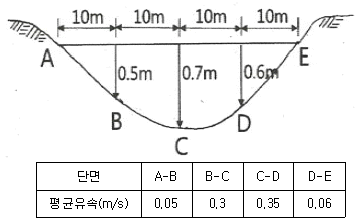
- 4.38m3/s
- 4.83m3/s
- 5.38m3/s
- 5.83m3/s
(정답률: 44%)
31. 수로측량 원도의 작성에 이용되는 도법은?
- TM도법
- UTM도법
- 점장도법
- 원뿔도법
(정답률: 43%)
32. 하천측량에서 수위관측소를 설치할 경우 고려사항으로 틀린 것은?
- 관측소의 위치는 그 상·하류의 상당한 범위까지 하안과 하상이 안전하고 세굴이나 퇴적이 되지 않아야 한다.
- 상·하류의 길이 약 100m 정도의 구간은 직선이고 유속의 변화가 작은 곳이 좋다.
- 지천의 합류점 또는 분류점으로 수위의 변화가 뚜렷한 곳이어야 한다.
- 평상시에는 홍수 때보다 수위표를 쉽게 읽을 수 있는 곳이어야 한다.
(정답률: 74%)
33. 종단곡선의 설치에서 상향기울기가 10/1000, 하향기울기가 30/1000, 반지름 3000m인 원곡선을 설치할 때 교점에서 곡선시점까지의 거리는?
- 30 m
- 40 m
- 50 m
- 60 m
(정답률: 44%)
34. 그림에서 AP, PB 사이에 단곡선을 설치할 때 ∠APB의 2등분선상의 Q점을 곡선의 중점으로 하는 이 곡선의 접선길이는? (단, Q=20m, 교각(1)=40°20´)
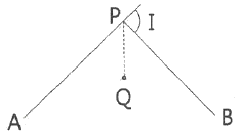
- 287.46 m
- 286.43 m
- 112.47 m
- 1⑤.57 m
(정답률: 42%)
35. 면적계산방법 중 도상거리법에 속하지 않는 것은?
- 방한법
- 삼사법
- 지거법
- 삼변법
(정답률: 57%)
36. 토탈스테이션(total station)을 이용한 단곡선 설치에 있어서 가장 널리 사용되는 편리한 방법은?
- 종거에 의한 설치법
- 중앙종거법
- 지거설치법
- 좌표법
(정답률: 61%)
37. 노선측량에서 그림과 같이 단곡선을 설치할 때 AC의 거리는? (단, I=70°, 곡선반지를 R=50 m)
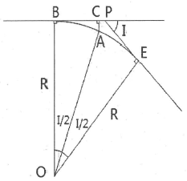
- 10.00 m
- 14.99 m
- 9.04 m
- 5.65 m
(정답률: 33%)
38. 하천의 평균유속을 구하기 위하여 수심H인 수면으로부터 0.2H, 0.4H, 0.6H, 0.8H인 곳의 유속을 측정하였더니, 각각 0.85m/s, 0.72m/s, 0.66m/s, 0.51m/s 이었다. 이때 3점법의 의하여 산출한 평균유속은?
- 0.63 m/s
- 0.67 m/s
- 0.69 m/s
- 0.70 m/s
(정답률: 66%)
39. 하천측량의 일반적인 작업 순서로서 옳은 것은?
- 도상조사→자료조사→현지조사→평면측량→수준측량→유량측량
- 도상조사→자료조사→수준측량→평면측량→현지조사→유량측량
- 도상조사→현지조사→유량측량→자료조사→평면측량→수준측량
- 도상조사→현지조사→자료조사→유량측량→수준측량→평면측량
(정답률: 62%)
40. 지하에 설치된 상·하수도시설, 가스시설, 통신시설 등의 건설 및 유지관리를 위한 자료 제공의 역할을 하는 측량은?
- 초구장측량
- 관계배수측량
- 건축측량
- 지하시설물측량
(정답률: 75%)
3과목: 사진측량 및 원격탐사
41. 항공사진의 기본변위와 관계없는 것은?
- 정사투영
- 촬영고도
- 중심투영
- 지형지물의 비고
(정답률: 59%)
42. 도화기로 등고선을 그릴 때 등고선의 높이 오차를 5m 이하로 하려면 측정하는 시차차의 오차는 최대 몇 mm 이하이어야 하는가? (단, 사진축척=1:30000, 사진크기=23cmx23cm, 사진의 중복도=60%, 초점거리=150mm)
- 0.01 mm
- 0.⑤ mm
- 0.1 mm
- 0.5 mm
(정답률: 53%)
43. 다음 중 원격탐사 영상을 이용하여 토지피복도를 제작 할 때 가장 활용도가 높은 영상은?
- 적외선 영상(Infrared Image)
- 초미세분광 영상(Hyper-Spectral Image)
- 열적외선 영상(Thermal Infrared Image)
- 레이더 영상(Radar Image)
(정답률: 58%)
44. 비행속도가 200km/hr인 항공기로 축척 1:20000의 사진을 종중복도 60%로 설정하여 촬영하기로 계획을 수립했다. 이때 동일한 조건에서 종중복도만 80%로 변경하였다면 인접사진 간의 촬영시간 간격(최소노출시간)은 초기 계획 촬영시간 간격의 몇 % 가 되어야 하는가?
- 50 %
- 90 %
- 110 %
- 125 %
(정답률: 39%)
45. 대공표지에 대한 설명으로 틀린 것은?
- 무광택 재질로 그림자가 지지 않도록 지면에서 약간 높게 설치한다.
- 상공은 적어도 15°정도 열어두어야 한다.
- 촬영 후 사진상에서 30 정도의 크기로 인식도록 한다.
- 대공표지는 반드시 촬영 전에 설치하여야 한다.
(정답률: 51%)
46. 사진측량에서 모델의 의미로 옳은 것은?
- 편위 수정된 사진이다.
- 촬영된 한 장의 사진이다.
- 한 쌍의 사진으로 실체시 되는 부분이다.
- 어느 지역을 대표할 만한 사진이다.
(정답률: 71%)
47. 위성영상 구매 시 메타데이터(Meta Data)에 포함되지 않는 정보는?
- 위성영상의 공간해상도
- 위성영상의 UTM 좌표
- 위성영상의 촬영범위
- 위성영상의 촬영날짜
(정답률: 50%)
48. 항공사진 촬영에 대한 설명으로 옳지 않은 것은?
- 주점, 연직점, 등각점의 특수 3점이 있다.
- 산악지 같은 지형의 상은 왜곡되어 찍힌다.
- 고층 빌딩이 많은 지역에서는 종중복도를 감소시킨다.
- 촬영 각도가 기울어지면 같은 사진 내에서도 축척이 일정하지 않다.
(정답률: 69%)
49. SAR(Synthetic Aperture Radar)에 대한 설명으로 틀린 것은?
- 야간에도 데이터 획득이 가능하다.
- 측면방향으로 데이터를 획득할 수 있다.
- DEM 생성이 가능하다.
- 수동적 광학센서를 사용한다.
(정답률: 72%)
50. 수치정상영상(digital ortho image)을 제작하기 위해 직접적으로 필요한 자료가 아닌 것은?
- 수치표고모델(DEM)
- 촬영된 원래 영상
- 외부표정요소
- 수치지도
(정답률: 64%)
51. 초점거리 150mm의 카메라가 축척 1:20000의 항공사진을 수직으로 촬영하였다. 사진상에서 연직점으로부터 어떤 건물의 정상까지 길이가 39 mm, 이 건물의 하단으로부터 정상까지의 변위량이 1.3 mm이었다면 건물의 높이는?
- 50 m
- 100 m
- 150 m
- 200 m
(정답률: 51%)
52. 지리정보시스템(GIS)의 자료 입력과정에서 다른 수치지도와 벡터기반의 중첩분석을 위해 기존 인쇄된 지도를 입력하는 가장 적당한 방법은?
- 스캐닝 후 벡터라이징 작업으로 선형 입력
- 스캐닝 후 영상 도면으로 사용
- 컴퓨터 마우스를 이용하여 수동적으로 입력
- 도면을 디지털 촬영 후 사신측량 방법으로 취득
(정답률: 73%)
53. 항공 라이다시스템에 대한 설명 중 옳지 않은 것은?
- 항공레이저스캐너와 GPS/INS 시스템으로 구성된다.
- 지표면에 대한 3차원 좌표정보를 취득하는 시스템이다.
- 항공사진측량보다 기상조건의 영향을 적게 받는다.
- 극초단파를 사용하는 수동적 센서 시스템이다.
(정답률: 69%)
54. 조정집성 영상지도 제작에 사용되는 사진은?
- 수렴사진
- 경사사진
- 정사사진
- 광각사진
(정답률: 66%)
55. 감독분류 알고리즘 중 하나로 확률을 기초로 각 밴드 내의 클래스에 대한 훈련자료 통계가 정규분포를 이룬다고 가정하고 영상을 분류하는 방법은?
- 최근린 분류(nearest-neighbor classifer)
- 최단거리 분류(minimum distance classifier)
- 최대우도 분류(maximum likelihood classifier)
- 거리가중 분류(distance weighted classifier)
(정답률: 46%)
56. 초점거리 150mm인 카메라로 평지를 촬영 하였을 때 주점기선의 길이가 80.5mm 이었다면 인접사진과의 종중복도는? (단, 사진의 크기는 23cmx23cm 이다.)
- 55 %
- 58 %
- 65 %
- 68 %
(정답률: 53%)
57. 번들조정법(광속조정법)에서 적용하는 기본 수학모형식은?
- 공선조건식
- 공면조건식
- 공액조건식
- 공간조건식
(정답률: 50%)
58. 사진측량의 특징에 대한 설명으로 틀린 것은?
- 사진에 나타나지 않는 피사대상에 대해서는 식별이 어렵다.
- 정확도가 균일하고 능률적이다.
- 동적인 대상물의 측량이 가능하다.
- 접근하기 어려운 대상물에 대한 측정이 불가능하다.
(정답률: 69%)
59. 사진의 표정과정에 대한 설명 중 옳지 않은 것은?
- 내부표정은 공선조건식을 이용하여 수립한다.
- 상호표정은 중복사진의 각각의 사진좌표계 사이의 3차원적인 기하학적 관계를 수립한다.
- 절대표정은 상호표정으로 생성된 3차원 모델과 지상좌표계 사이의 기하학적 관계를 수립한다.
- 내부표정은 기계좌표계와 사진좌표계 사이의 2차원적인 기하학적 관계를 수립한다.
(정답률: 37%)
60. 사진축척 1:10000, 사진의 크기 23cmx23cm인 항공사진의 사진1장에 포괄되는 실제면적은?
- 5.29 km2
- 10.58 km2
- 21.16 km2
- 52.9 km2
(정답률: 60%)
4과목: 지리정보시스템
61. 점 자료에 대한 공간분석방법으로 적합한 것은?
- 최근린방법(nearest neighbour method)
- 플랙탈 차원(fractal dimenssion)
- 망분석 도표이론방법(network and graph theoretic method)
- 형상관측(shape measures)
(정답률: 63%)
62. 지리정보시스템(GIS) 데이터베이스에 관한 설명으로 가장 옳지 않은 것은?
- 레코드가 모여 필드를 구성한다.
- 일반적으로 데이터 파일은 레코드, 필드 키의 3가지로 구성된다.
- 파일베이스 방식에서 데이터베이스 방식으로 발전하였다.
- 일반적으로 동일길이 레코드 방식보다는 가변길이 레코드 방식이 선호된다.
(정답률: 55%)
63. 연속수치지형도를 제작할 경우 고려해야 할 사항이 아닌 것은?
- 지도투영구역(zone)의 설정
- 단일 투영원점의 결정
- 점, 선, 면형 객체 레이어의 통합
- 연속된 도형에 대한 속성 부여
(정답률: 36%)
64. 공간좌표 변환에 사용되는 Affine 식에 대한 설명으로 옳지 않은 것은?
- 미지수가 6개이다.
- 등각 상사변환이다.
- 좌표계의 회전이 포함된다.
- 원점의 이동이 포함된다.
(정답률: 51%)
65. 버퍼(buffer)에 관한 설명으로 옳지 않은 것은?
- 버퍼링의 목적은 근접 분석시의 관심 대상지역을 경계 짓기 위함이다.
- 버퍼는 주어진 특정한 형상으로부터 외부로 버퍼존이 형성되므로 등심원 지대를 쉽게 구축할 수 있다.
- 선형 대상물의 굴곡이 심하거나 폴리곤의 형상이 매우 복잡한 경우 중첩되어 형성된다.
- 래스터 데이터 모델의 경우 각 좌표점으로부터 수직 거리로 측정된다.
(정답률: 50%)
66. 지리정보시스템(GIS)으로 구축한 데이터의 위치와 실제 검측한 위치가 아래 표와 같을 때 GIS 데이터의 거리 오차는?
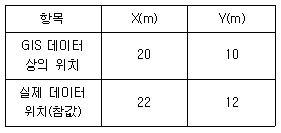
- 약 2.2 m
- 약 2.8 m
- 약 3.2 m
- 약 3.6 m
(정답률: 54%)
67. 대상물에 대한 공간정보 구축 시 일반적인 도형 정보 표현방법으로 가장 거리가 먼 것은?
- 행정구역 –면(Polygon)
- 저수지 –면(Polygon)
- 소화전 –면((Polygon)
- 교량 - 면((Polygon)
(정답률: 72%)
68. 공간자료와 자료처리의 개방성과 상호운용성을 목적으로 1994년 결성되었고 GIS 시장 확대를 위해 GIS 소프트웨어 공급자 중심의 국제 표준을 마련하는 기관은?
- OGC(Open Geospatial Consortium)
- ISO(International Organization for Standardization)
- W3C(World Wide Web Consortium)
- IEC(International Electrotechnical Commission)
(정답률: 65%)
69. 불규칙 삼각망(TIN)에 의해 지형을 표현하는 방식의 특징에 대한 설명으로 틀린 것은?
- 백터구조로 지형데이터의 표현을 위한 위상을 갖는다.
- 격자방식와 비교하여 비교적 적은 자료량을 사용하여 전반적인 지형의 형태를 나타낼수 있다.
- 고도값의 표현에 있어서 동일한 밀도의 동일한 크기의 격자를 사용한다.
- 삼각망의 각 변은 두 개의 절점을 가지나 각 절점은 여러 개의 변을 구성한다.
(정답률: 45%)
70. 지리정보시스템(GIS)의 공간분석기능에 대한 설명 중 관계가 옳은 것은?
- 버퍼분석(Buffering Analysis) - 가시권분석, 표면 모델링, 3차원 가시화, 경사/향 분석
- 기하학적분석(Geometrical Analysis) - 영향권 분석
- 망분석(Network Analysis) - 연결성, 방향성, 최단경로, 최적경로의 분석
- 중첩분석(Ovrtlay Analysis) - 거리, 면적, 둘레, 길이, 무게중심 등의 정량적 분석
(정답률: 60%)
71. 조직 내 많은 부서가 공동으로 필요로 하는 다양한 지리정보를 손쉽게 취급할 수 있도록 클라이언트-서버기술을 바탕으로 시스템을 통합시기는 GIS 환경은?
- Component GIS
- Enterprise GIS
- Internet GIS
- Professional GIS
(정답률: 61%)
72. 지리정보시스템(GIS) 자료의 출력을 위한 하드웨어가 아닌 것은?
- 모니터
- 디지타이저
- 프린터
- 플로터
(정답률: 60%)
73. 부울연산(Boolean)을 이용한 지리 속성정보의 추출 방법이 아닌 것은?
- A and B
- A not B
- A xor B
- A xnot B
(정답률: 62%)
74. 지리정보시스템(GIS)에서 분산처리시스템의 장점과 거리가 먼 것은?
- 연산속도 향상
- 자원공유
- 효율성
- 창조성
(정답률: 72%)
75. 지오레퍼런싱(georeferencing) 에 관한 설명으로 옳지 않은 것은?
- georeferencing이란 영상이나 일반적인 데이터베이스 정보에 좌표를 부여하는 과정이다.
- address geocoding은 georeferencing의 일부이다.
- georeferencing을 통해 데이터의 위상구조가 부여된다.
- 영상의 georeferencing에서는 지상기준점을 활용하여 좌표를 부여한다.
(정답률: 49%)
76. 지형도, 항공사진을 이용하여 대상지의 3차원의 좌표를 취득하여 불규칙한 지형을 기하학적으로 재현하고 수치적으로 해석하므로 토공량 산정, 노선선정, 택지조성 등에 이용되는 것은?
- 원격탐사
- 도시정보체계
- 정사사진
- 수치표고모형
(정답률: 65%)
77. 지리정보시스템(GIS)의 기능에 대한 설명으로 틀린 것은?
- GIS는 여러 형태의 자료에 대한 입력과 입력된 자료를 확인하는 조회 기능을 제공한다.
- GIS는 다양한 자료 분석과 공간 분석을 위한 모델링 기능을 제공한다.
- GIS는 데이터를 체계적으로 조직하고 관리, 수정, 갱신 저장한다.
- GIS는 그래픽정보의 표현 기능을 제공하지만 지도정보를 표현하기에는 부적절하다.
(정답률: 69%)
78. 지리정보시스템(GIS)의 자료 형태 중 래스터 데이터 모델에 대한 특징이 아닌 것은?
- 데이터 구조가 단순하다.
- 저장 용량이 크고, 공간적 정확성이 떨어진다.
- 중첩분석을 간단히 할 수 있다.
- 위상구조를 가질 수 있다.
(정답률: 53%)
79. 속성분류 정확도를 평가하기 위하여 참조데이터와 샘플데이터를 정리한 결과가 표와 같을 때, 전체 정확도는?
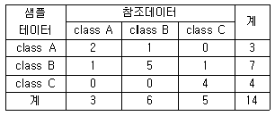
- 21.4 %
- 35.7 %
- 50.0 %
- 78.6 %
(정답률: 56%)
80. 지리정보시스템(GIS)에서 래스터자료의 압축기법이 아닌 것은?
- quadtree 기법
- block code 기법
- DBMS 기법
- run-length code 기법
(정답률: 68%)
5과목: 측량학
81. 삼각측량에서 삼각점의 위치 선정에 관한 주의사항으로 옳지 않은 것은?
- 각 점이 서로 잘 보여야 한다.
- 측점 수는 될 수 있는 대로 적게 한다.
- 계속해서 연결되는 작업에 편리하여야 한다.
- 삼각형은 될 수 있는 대로 직각삼각형으로 구성한다.
(정답률: 69%)
82. A, B의 좌료가 각각 (125.32m, 236.22m)와 (-23.1.11m, -120.21m)일 때 B의 방위각은?
- 55°
- 135°
- 225°
- 3⑤°
(정답률: 49%)
83. 트래버스측량의 각 관측에서 오차가 생겼을 때, 허용범위 안에 있을 경우의 오차배분에 대한 설명으로 옳지 않은 것은?
- 각 관측의 정확도가 같을 때는 오차를 각의 대소에 관계없이 등분하여 배분한다.
- 각 관측의 경중률이 다를 경우에는 그 오차를 경중률을 고려하여 배분한다.
- 각 관측의 경중률이 같은 경우에는 각의 크기에 비례하여 배분한다.
- 변길이의 역수에 비례하여 각 관측각에 배분한다.
(정답률: 42%)
84. 등고선의 성질에 대한 설명으로 틀린 것은?
- 동일 등고선 위의 모든 점은 높이가 같으며, 한 등고선은 반드시 도면 내외에서 폐합한다.
- 높이가 다른 등고선은 절벽이나 동굴을 제외하고는 교차하거나 합쳐지지 않는다.
- 등고선이 도면 내에서 폐합하는 경우에는 산꼭대기나 분지를 나타낸다.
- 최대경사선은 등고선과 직각으로 교차하지만, 분수선과 능선은 등고선과 평행하다.
(정답률: 44%)
85. 직접법으로 등고선을 관측하기 위하여 B점에 레벨을 세우고 표고가 53.85m인 P점에세운 표척을 시준하여 1.28m를 얻었다. 50.25m인 등고선 위의 A점을 정하려면 시준하여야할 표척의 높이는?
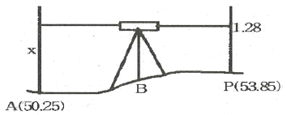
- 1.28 m
- 2.32 m
- 3.60 m
- 4.88 m
(정답률: 53%)
86. 그림과 같이 교호수준측량을 실시한 결과가 a1=1.465m, a2=0.308m, b1=2.737m, b2=1.584m, A점의 표고=56=867m이었다면 B점의 표고는?
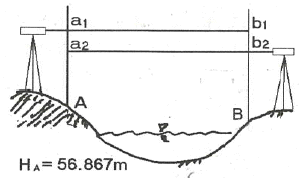
- 55.583 m
- 55.593 m
- 58.141 m
- 58.131 m
(정답률: 52%)
87. 수준측량에서 전시만 읽는 점으로 다른 점의 지반고에 영향을 주지 않는 점을 무엇이라 하는가?
- 중간점
- 이기점
- 수준점
- 기지점
(정답률: 47%)
88. 수평각 관측에서 수평축과 시준축이 직교하지 않음으로써 일어하는 각 오차의 소거방법으로 옳은 것은?
- 정·반위관측
- 반복법관측
- 방향각법 관측
- 조합각관측법
(정답률: 53%)
89. 최소제곱법의 원리를 이용하여 처리할 수 있는 오차는?
- 정오차
- 우연오차
- 누차
- 계통오차
(정답률: 59%)
90. 전체 측선의 길이의 합이 900m인 다각형에 폐합비를 1/600로 한다면 축척 1;500 도상에서 혀용 폐합오차는?
- 1 mm
- 3 mm
- 5 mm
- 10 mm
(정답률: 52%)
91. 그림과 같이 삼각형에서 A점과 B점의 좌표가 각각 (1000m, 1000m), (1500m, 1400m)이고 a=1500,00m, b=1200.00m 일 때, 삼변측량을 위한 관측방정식으로 옳은 것은?
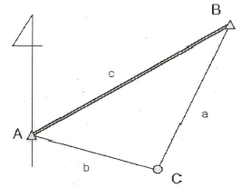
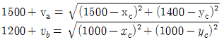
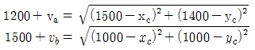
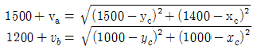
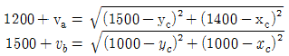
(정답률: 40%)
92. 다음 중 3차원 위치성과를 획득할 수 없는 측량장비는?
- 토털스테이션
- 레벨
- LiDAR
- GPS
(정답률: 67%)
93. 축척 1:25000의 지형도에서 기울기가 4%인 지역의 주곡선 간의 도상 수평거리는?
- 5 mm
- 10 mm
- 20 mm
- 40 mm
(정답률: 40%)
94. 강철테이프에 의한 거리측정값의 보정에 있어서 처짐에 대한 보정량 계산과 관계가 없는 요소는?
- 재료의 단위중량
- 지점간의 거리
- 프아송 비
- 장력
(정답률: 62%)
95. 공공측량에 관한 설명으로 옳지 않은 것은?
- 선행된 공공측량의 성과를 기초로 측량을 실시할 수 있다.
- 선행된 일반측량의 성과를 기초로 측량을 실시할 수 있다.
- 공공측량시행자는 제출한 공공측량 작업계획서를 변경한 경우에는 변경한 작업계획서를 제출하여야 한다.
- 공공측량시행자는 공공측량을 하려면 미리 측량지역, 측량기간, 그 밖에 필요한 사항을 시·도지사에게 통지하여야 한다.
(정답률: 53%)
96. 측량기준점을 크게 3가지로 구분할 때 이에 속하지 않는 것은?
- 국가기준점
- 공공기준점
- 지적기준점
- 수로기준점
(정답률: 51%)
97. 수로서지(水路書誌)에 해당하는 서지류(書誌類)가 아닌 것은?
- 연안 및 주요 항만의 항해안전정보를 수록한 항로지
- 항로표지의 번호, 명칭, 위치, 등질, 등고, 광달거리 등을 수록한 등대표
- 조류와 해류의 정보를 수록한 조류도 및 해류도
- 해양위기 발생 시 선박의 안전에 관한 신호방법을 수록한 국제신호서
(정답률: 54%)
98. 측량성과 심사수탁기관이 심사결과의 통지기간을 연장할 수 있는 경우에 대한 설명으로 옳지 않은 것은?
- 성과심사 대상지역의 기상악화 및 천재지변 등으로 심사가 곤란할 때
- 지상현황측량, 수치지도 및 수치표고자료 등의 성과심사량이 면적 10제곱킬로미터 이상일 경우
- 수치지도 및 수치표고자료의 성과심사량이 노선 길이 100킬로미터 이상일 때
- 지하시설물도 및 수심측량의 심사량이 200킬로미터 이상일 때
(정답률: 42%)
99. 국가공간정보에 관한 법률에서 아래와 같이 정의되는 것은?
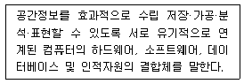
- 공간정보체계
- 국가공간정보통합체계
- 공간정보데이터베이스
- 공간정보
(정답률: 47%)
100. 측량기기의 검사주기에 관한 사항으로 옳은 것은?
- 레벨 : 2년
- 토털 스테이션 : 3년
- 트랜싯(데오드라이트): 4년
- 지피에스(GPS) 수신기 : 1년
(정답률: 66%)